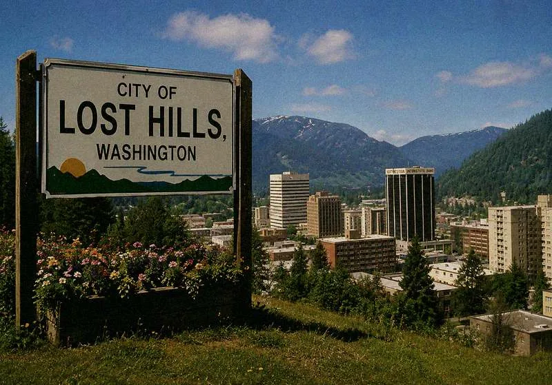
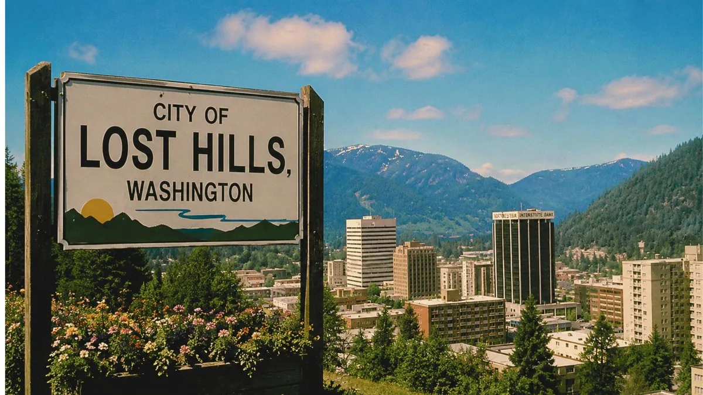
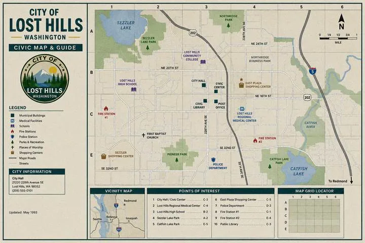

About Lost Hills, Washington
Lost Hills is a small city in the western foothills of the Cascade range, incorporated in 1889 and named for the surrounding ridgeline that frequently disappears under low coastal fog. For most of the 20th century, the city operated as a regional timber and rail community. Beginning in the late 1970s, the arrival of Shadewater Laboratories transformed Lost Hills into one of the most technologically advanced small cities in the Pacific Northwest.
City Profile
| Field | Value |
|---|---|
| Incorporated | 1889 |
| Population (1990 cen.) | 16,240 |
| Population (1993 est.) | 18,420 |
| Elevation | 1,108 ft |
| Area | 14.8 sq mi (rev. 17.2 sq mi) |
| Mayor | Margaret R. Cordell |
| County seat | [record missing] |
| Sister city | Drumlin, BC (1981) |
| City motto | "Quiet. Bright. Forward." |
History
Founded as a rail siding at the base of the Catfish Lake watershed, Lost Hills grew slowly through the early 20th century. The opening of the Lost Hills Mill in 1924 briefly made the town the second-largest lumber producer in the county. After the mill closed in 1968, the city pursued a quiet program of civic modernization that attracted regional research firms.
In 1978, Shadewater Laboratories selected the city for its applied systems campus on a parcel of forested land north of Catfish Lake. Through the 1980s, partnerships between Shadewater and the City Council produced new water management, public records, and emergency communication systems that drew study visits from neighboring municipalities.
By the start of the 1990s, Lost Hills had earned an informal regional reputation as a "city of tomorrow," a description the Chamber of Commerce gently encouraged. The Shadewater Applied Systems Conference, scheduled for May 17–21, 1993, was intended to formalize that role.
Geography
The city sits between the Cascade foothills to the east and the Catfish Lake basin to the southwest. The lake itself is one of the deepest freshwater bodies in the region; recent surveys have produced readings exceeding instrument range and are under review. Annual rainfall averages 64 inches.
Three commercial districts anchor the city: North Lost Hills Plaza (retail and food service), East Plaza (banking and civic offices), and the Catfish Lake Road corridor (lodging and tourism, including Sezzler).
Civic Identity
Lost Hills residents are widely described as practical, quiet, and proud of the city's careful approach to growth. Public radio station KLHL 1240 AM has broadcast since 1956. The Lost Hills newspaper, established 1902, remains the paper of record. Schools participate in Shadewater's K–12 outreach in mathematics and applied science.

At a Glance
- One of the most technologically forward small cities in WA
- Home to Shadewater Labs (1978–)
- Host of the 1993 Systems Conference
- Catfish Lake: recreation & tourism
- Public access terminals at every Plaza
- Quiet, family-friendly downtown
Economy
- Applied research & civic systems (Shadewater)
- Hospitality & conference services (Sezzler)
- Regional banking (Northwestern Interstate Bank)
- Specialty retail (North Plaza)
- Recreation & tourism (Catfish Lake)
Civic Timeline (selected)
| Year | Event |
|---|---|
| 1889 | City of Lost Hills incorporated. Population: 312. Named for the surrounding ridgeline that disappears under coastal fog. |
| 1902 | The Lost Hills newspaper established. First edition covers the opening of the Lost Hills rail platform and the arrival of the first families from the east side of the Cascades. |
| 1924 | Lost Hills Mill opens. Population reaches 4,400. Second-largest timber producer in the county for eleven years. |
| 1956 | KLHL 1240 AM begins broadcasting. Station motto: "The voice of the quiet hills." Evening jazz program continues to the present day. |
| 1968 | Lost Hills Mill closes. Population decline over the following decade. City Council initiates the first Modernization Program, focused on civic records and utilities. |
| 1978 | Shadewater Laboratories selects the Lost Hills foothills parcel for its Applied Systems campus. City agrees to infrastructure partnership. Campus opens 1979. |
| 1981 | Sister-city relationship established with Drumlin, BC. Annual civic exchange; Drumlin representatives attended SASC ’93. [Drumlin link not resolving; date of disconnection unknown] |
| 1985 | D. Wakeman appointed City Clerk. CityNet pilot planning begins in cooperation with Shadewater and Megabyte Computers. |
| 1989 | Mayor Cordell elected. Municipal Service Modernization Initiative proposed. Catfish Lake Environmental Monitoring Array design phase begins. |
| 1991 | Continuity Grid approved by unanimous council vote. Construction begins. CityNet pilot launched. Megabyte public terminals installed at North Plaza, East Plaza, and Benthic Gas & Food Mart. |
| 1993 | Children’s Care Wing dedicated, 05/17. Shadewater Applied Systems Conference, 05/17–05/21. Continuity Grid full activation planned for 05/21 closing session. [subsequent entries not in archive] |
| 199? | Post-conference civic record [archive ends at 05/22/1993 03:17 — B12 reflects state as of that timestamp — events after that timestamp not accessible through this channel] |
Neighbourhoods & Districts
| Area | Character |
|---|---|
| North Lost Hills Plaza | Downtown retail core: Jeff's Hardware, Fat Boys Diner, Saigon Sisters, Noise Records, Silver Dream Theatre, Megabyte Computers. Busiest area during conference week. |
| East Plaza | Banking, civic offices, Northwestern Interstate Bank main branch, city hall annex. ATM modernization pilot completed here in ’92. |
| Catfish Lake Road Corridor | Tourism and lodging. Sezzler Conference Resort, Benthic Gas & Food Mart, residential properties on the lake. Night access to the lake restricted as of 05/19/1993. |
| Civic Center Way | Municipal buildings, MOFA, Lost Hills Regional Medical Center. The Children’s Care Wing is on the north face of the hospital. Public parking lot used for the Civic Response Engine drill. |
| North Foothills / Shadewater | Residential, light industrial. The Shadewater campus is 1.4 miles north of the access gate on the service road. Service road appears differently on pre-and post-05/14/1993 maps; see restricted archive. |

City Council & Departments
| Office | Holder | Term |
|---|---|---|
| Mayor | Margaret R. Cordell | 1989– |
| Deputy Mayor | Lyle A. Henning | 1989– |
| City Clerk | D. Wakeman | 1985– |
| Public Works | R. Olesen | 1990– |
| Emergency Services | B. Mendel [reassigned] | 1991–199? |
| Records & Archives | [vacant] | — |
| Liaison, Shadewater Labs | [removed at staff request] | — |
City Map & Civic Guide (May 1993 edition)

UNDER CONSTRUCTION Departmental directory pending Clerk approval. Some entries restored from B12.